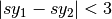

Examples¶
Getting started: Simple Automatic Emergency Braking¶

An illustration of Automatic Emergency Braking System
Consider the example an AEB as shown above: Cars 1 and 2 are cruising down the highway with zero relative velocity and certain initial relative separation; Car 1 suddenly switches to a braking mode and starts slowing down according, certain amount of time elapses, before Car 2 switches to a braking mode. We are interested to analyze the severity (relative velocity) of any possible collisions.
Safety Verification of the AEB System¶
The black-box of the vehicle dynamics is described in The Autonomous Vehicle Benchmark, and the transition graph of the above AEB is shown in Transition Graph. The unsafe region is that the relative distance between the two cars are too close (). The input files describing the hybrid system is shown in Input Format.
Verification Result of the AEB System¶
Run DryVR’s verification algorithm for the AEB system:
python main.py input/daginput/input_brake.json
The system is checked to be safe. We can also plot the reachtubes for different variables. For example, the reachtubes for the position of Car1 and Car2 along the road the direction are shown below. From the reachtube we can also clearly see that the relative distance between the two cars are never too small.

Reachtube of the position sy of Car1 and Car2
The Autonomous Vehicle Benchmark¶
The hybrid system for a scenario is constructed by putting together several individual vehicles. The higher-level decisions (paths) followed by the vehicles are captured by the transition graphs discussed in Transition Graph.
Each vehicle has the following modes
- Const: move forward at constant speed,
- Acc1: constant acceleration,
- Brk or Dec: constant (slow) deceleration,
- TurnLeft and TurnRight: the acceleration and steering are controlled in such a manner that the vehicle switches to its left (resp. right) lane in a certain amount of time.
The mode for the entire system consists of n vehicles are the mode of each vehicle separated by semicolon. For example, Const;Brk means the first car is in the const speed mode, while the second car is in the brake mode.
For each vehicle, we mainly analyze four variables: absolute position
() and velocity () orthogonal to the road direction
( -axis), and absolute position () and velocity () along the
road direction (
-axis), and absolute position () and velocity () along the
road direction ( -axis). The throttle and steering is captured using the four variables.
-axis). The throttle and steering is captured using the four variables.
Due to the MATLAB license issue, we are not able to release the Simulink benchmarks we have used in the publications. We have since reproduced the ADAS and autonomous vehicle benchmark in Python and connect it with DryVR as a simulator. We are hoping to move more examples to Python in the near future.
For more details, please refer to Section 2.5 of the CAV2017 paper.
Other examples¶
Next, we briefly introduce other examples included in the inputFile folder and their verification results. Note that as the algorithm uses nondeterministic method to generate traces, the verification result like refine times, running time may vary between different runs.
AutoPassing
Initial condition: Car1 is behind Car2 in the same lane, with Car1 in Acc1 and Car2 in Const.
Transition graph: Car1 goes through the mode sequence TurnLeft, Acc1, Brk, and TurnRight, Const with specified time intervals in each mode to complete the overtake maneuver. If Car2 switches to Acc1 before Car1 enters Acc1 then Car1 aborts and changes back to right lane. If Car2 switches to Dec before Car1 enters TurnLeft, then Car1 should adjust the time to switch to TurnLeft to avoid collision.
Requirement: Car1 overtakes Car2 or abort the overtaking while maintaining minimal safe separation.
Inputfiles:
- input_AutoPassingSafe: safe
- input_AutoPassingUnsafe: unsafe
- input_AutoPassingSimpleSafe: safe
- input_AutoPassingSimpleUnsafe: unsafe
Merge
Initial condition: Car1 is in left and Car2 is in the right lane; initial positions and speeds are in some range; Car1 is in Const mode, and Car2 is in Const mode.
Transition graph: Car1 goes through the mode Acc1, TurnRight, Const with specified intervals of time to transit from mode to another mode. Car2 goes through the mode Acc1 or Const, TurnRight, Const with specified intervals of time to transit from mode to another mode. Car1 will merge ahead of Car2 of behind of Car2 based on cars’s mode transition.
Requirement: Car1 merges ahead or behind of Car2 and maintains at least a given safe separation.
InputFiles:
- input_MergeSafe: safe
- input_MergeUnsafe: unsafe
MergeBetween
Initial condition: Car1, Car2, Car3 are all in the same lane, with Car1 behind Car2, Car2 behind Car3, and in the Const mode, initial positions and speeds are in some range.
Transition graph: Car1 goes through the mode sequence TurnLeft, Acc1, Dec, and TurnRight, Const with specified time intervals in each mode to overtake Car2. Car3 transits from Const to Acc1 then transits back to Const, so Car3 is always ahead of Car1.
Requirement: Car1 merges between Car2 and Car3 and any two vehicles maintain at least a given safe separation.
InputFiles:
- input_MergeBetweenSafe: safe
- input_MergeBetweenUnsafe: unsafe